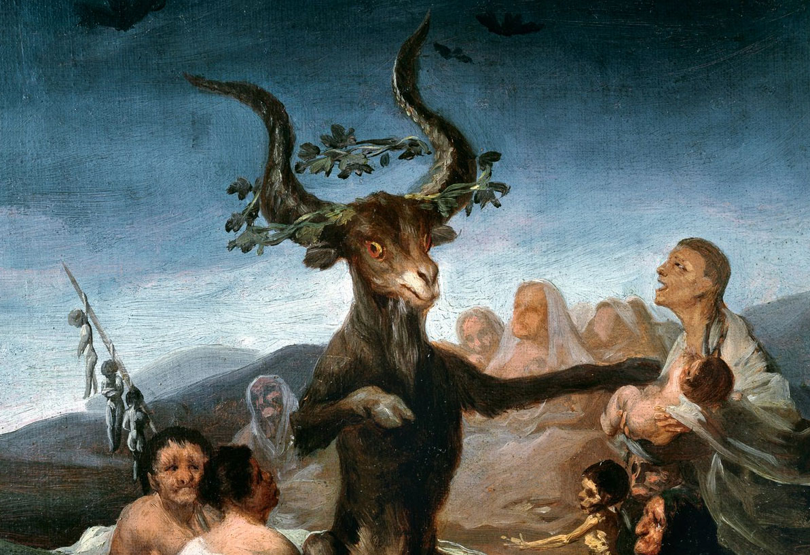
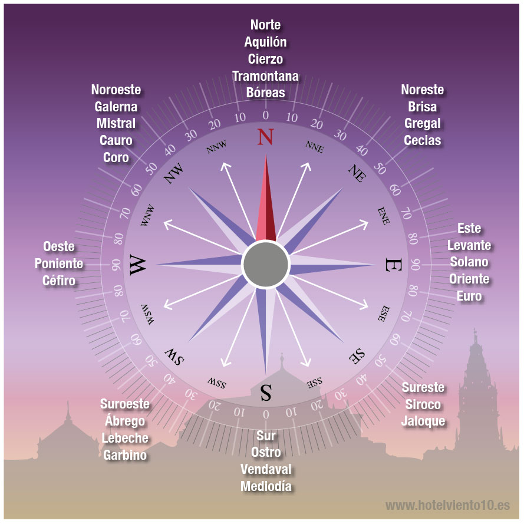
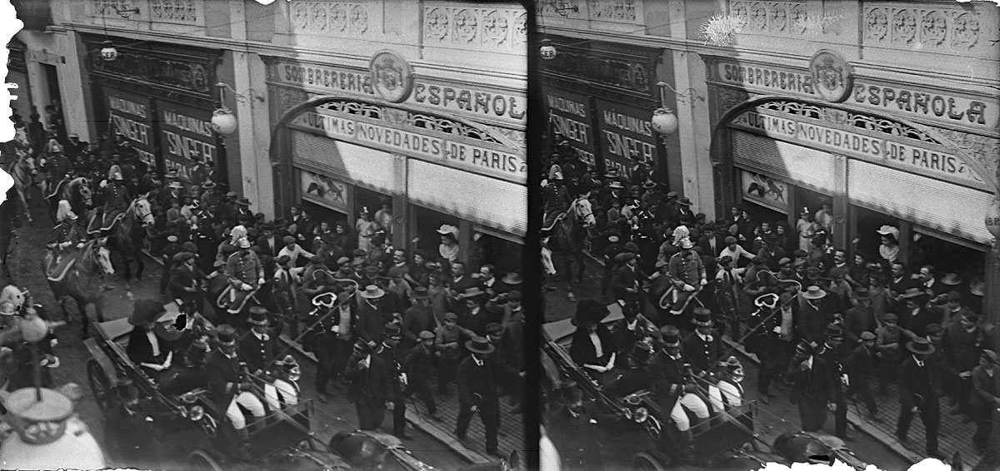
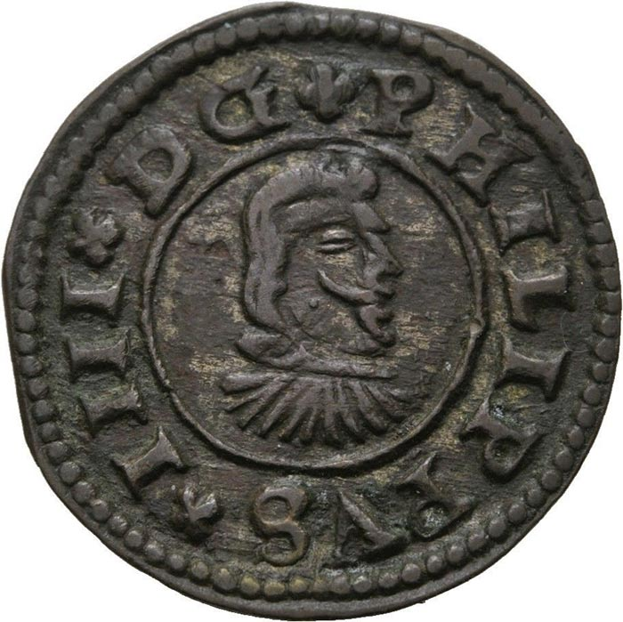
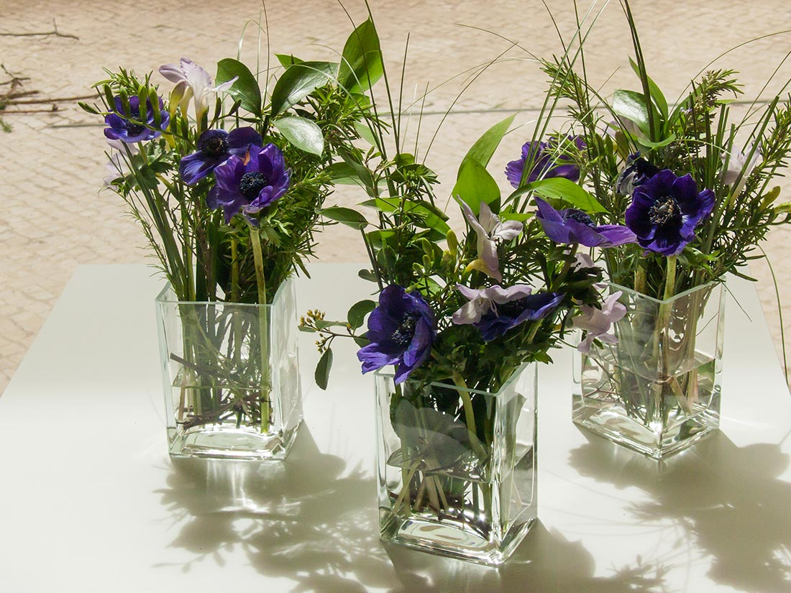
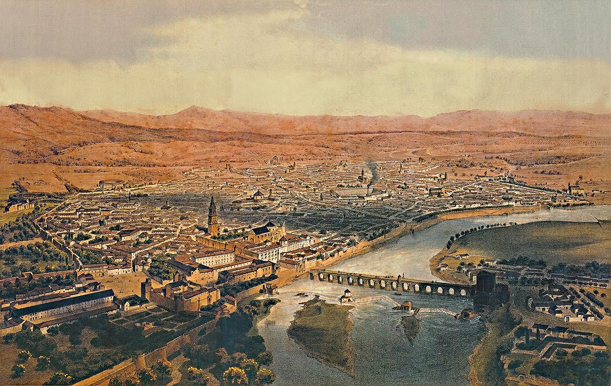
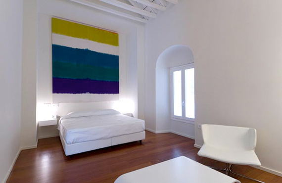

Blog
Lo que no cuentan las guías de Córdoba, escrito desde Viento 10

¿Brujas en Córdoba?
Aunque un dicho gallego reza que “haberlas haylas” a mí me cuesta mucho pensar que todas esas historias fantásticas y milagreras tengan algo de verdad. Más si pensamos en qué época nacen todas estas historietas. Con una Inquisición que construye sobre la mentira sus acusaciones, en muchos casos con fines que nada tienen que ver con la limpieza étnica y religiosa que pretenden. Unos tiempos oscuros donde la ignorancia es el caldo perfecto para expandir bulos y falsedades que excitan a las turbas a encender los quemaderos del santo oficio, como hoy se enciende las gradas de los estadios.

Rosa de los Vientos
El Viento es un contubernio mágico entre el Sol y las rotaciones de la Tierra. Es un dios creador desde las mitologías más arcanas del hombre. Transporta las semillas y la vida, modela las montañas y crea las dunas y las olas. Ni la lluvia ni el agua dulce existirían sin la intervención del viento, es decir, que nosotros no seríamos si el viento no fuera.

Una Historia Gráfica de Córdoba en la Red.
No hace mucho tiempo para bucear en el pasado de las ciudades, teníamos que escarbar en bibliotecas. Encontrar fotos antiguas de la ciudad era un trabajo casi de arqueología rebuscando en anticuarios y mercadillos de cachivaches. Pero todo esto ha quedado atrás con la aparición de internet y todavía más atrás con la de las redes sociales.
...Ese gran invento.
El turismo es tan antiguo como las ciudades. Ya los griegos emprendían viajes de placer para asistir a los Juegos en la ciudad de Olimpia. Los romanos eran muy aficionados a los baños y termas y las visitaban a muchas leguas de su residencia habitual.
Buscáis la fama, pero la fama cuesta...
"Buscáis la fama, pero la fama cuesta y aquí es donde vais a empezar a pagar. Con sudor." Así comenzaban los capítulos de la ochentera y superfamosa serie televisiva "Fama". Y así comenzó también esta aventura, allá por 2005. Este mes de mayo Hotel Viento 10 ha entrado en el Salón de la Fama de Trip Advisor, al obtener durante cinco años consecutivos el Certificado de Excelencia que este portal concede a quienes reciben críticas positivas y constancia de satisfacción en el servicio contratado.

El motín del Pan y la falsificación de monedas en los conventos de Córdoba.
El Motín del Pan de Córdoba en mayo de 1652 fue justificado oficialmente por las epidemias de peste y el desorbitado precio de las cosas en esos años. Todos aceptamos como válidas las explicaciones que Ramírez de Arellano da sobre el asunto, y esta es casi la versión oficial de lo que se considera una de las primeras revueltas populares de Europa, y que después se extenderán por todo el continente hasta llegar a la Revolución francesa o más recientemente al Mayo del 68.

Púrpura, morado, violeta, lila, malva… ¿Cuál es el color de la Pasión?
El viernes de Dolores y alrededor de los arreglos florales que Javier (BUREAU DELLAFLEUR) ha realizado para esta semana festiva en Viento10, surgió la discusión entre Gerardo y él sobre el nombre de los colores de las flores. Uno decía que eran púrpura, el otro que moradas, otro que pasaba por ahí aseguraba que eran malvas…

¿Se hizo la famosa panorámica de Alfred Guesdon desde un globo?
Si hay una imagen interesante de la Córdoba de mediados del siglo XIX, esa es la vista aérea de la ciudad que realiza y publica Alfred Guesdon en 1853. Tuvimos esa suerte y Córdoba fue una de las ciudades elegidas para componer este bello álbum de estampas.

Opinión de Rosa Marqués, periodista
AMOR UNDERGROUND ¿Se imaginan a la ‘poco convencional’ pareja de Patti Smith y Robert Mapplethorpe paseando por Córdoba? Sí. Recorrerían al anochecer antiguas callejas suburbiales, del “antiguo barrio de los gitanos”, que conectan la calle Amparo hasta la de plaza de la Alhóndiga: